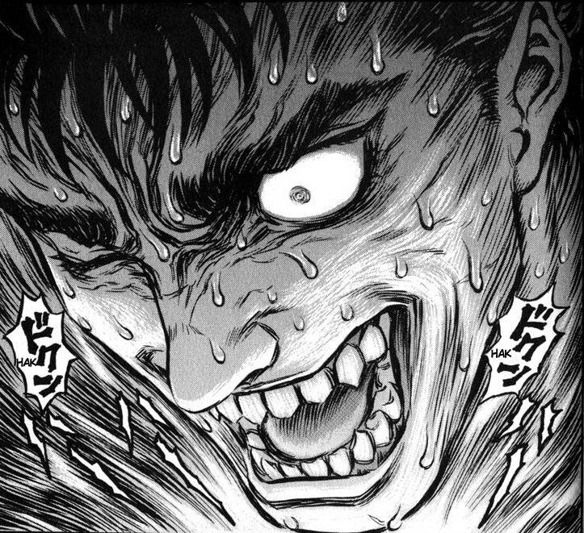
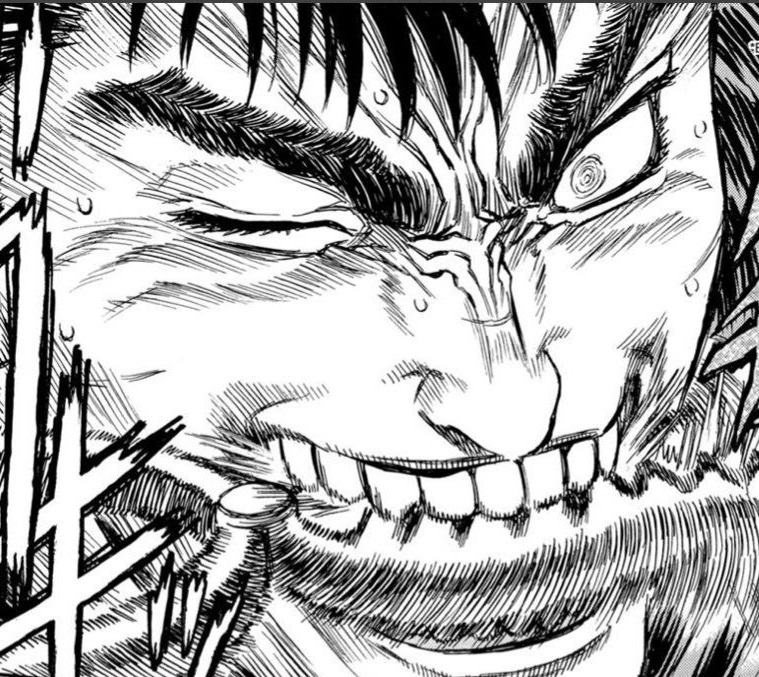

Козерог 23 декабря – 20 январяВодолей 21 января – 19 февраляРыбы 20 февраля – 20 мартаОвен 21 марта – 20 апреляТелец 21 апреля – 21 маяБлизнецы 22 мая – 21 июня

Рак 22 июня – 22 июляЛев 23 июля – 21 августаДева 22 августа – 23 сентябряВесы 24 сентября – 23 октябряСкорпион 24 октября – 22 ноябряСтрелец 23 ноября – 22 декабря